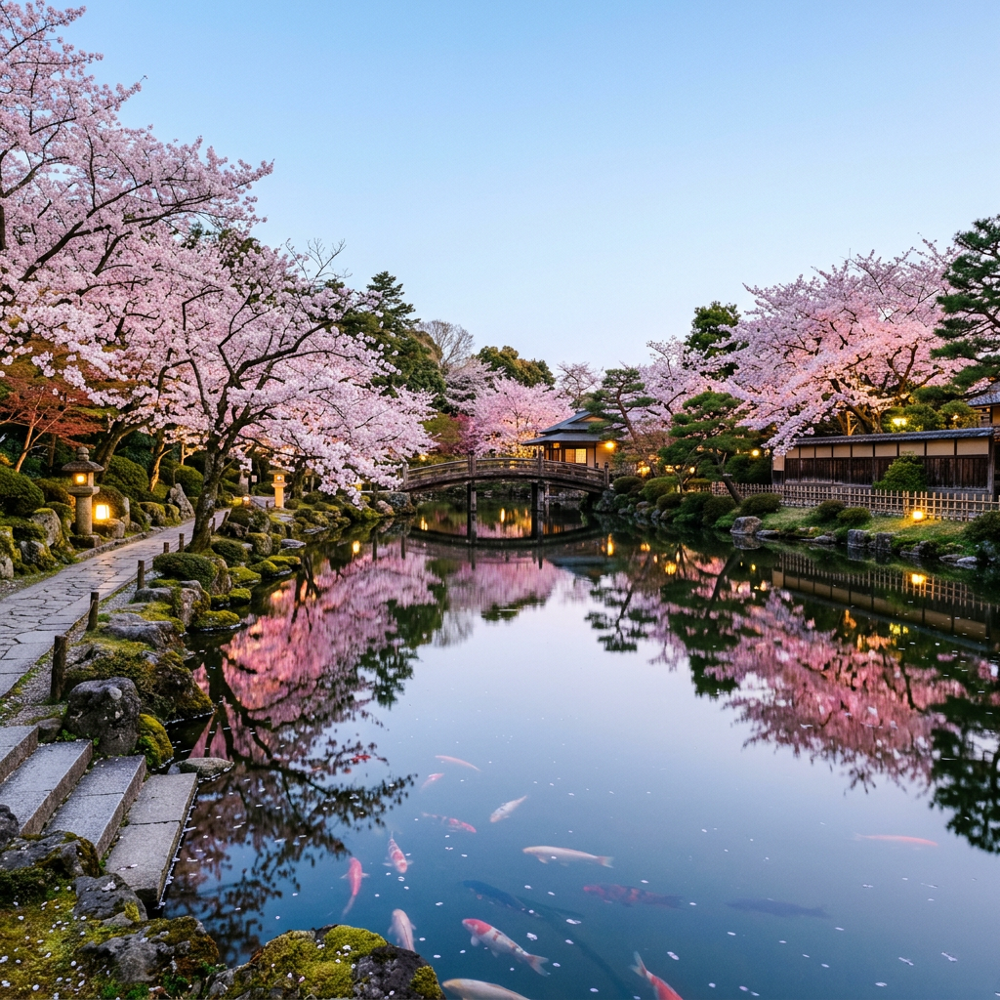

Hvorfor akkurat Japan?
En av grunnene til at jeg drømmer om å reise til Japan er fordi det er så annerledes fra Norge.
En annen grunn er fordi jeg er liker teknologi og mange steder i Japan har masse moderne teknologi.

Tre ting du må oppleve i Japan
- Besøke Tokyo
- Dra på en robot cafe
- Besøke Mount Fuji
Fakta om Japan
- Land: Japan
- Språk: Japansk
- Valuta: Japanske yen
- Beste reisetid: Om våren spesielt rundt mars og april
Et Reisetips før du drar!
Husk å kjøpe et reisekort så du slipper å bruke unødvendige penger på taxier!